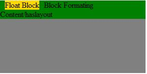
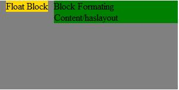
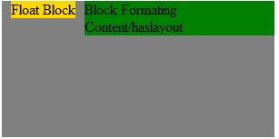
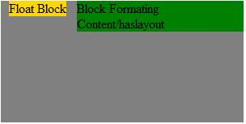
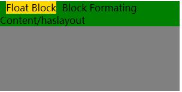
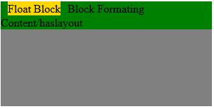

info
代码
<div style="width: 300px; height: 150px; background: gray;"> <div style="float: left; background: gold; margin: 0 10px;"> Float Block </div> <div style="background: green; zoom: 1;"> Block Formating Content/haslayout </div> </div>
Float Block
Block Formating Content/haslayout
在触发hasLayout 的元素和创建了Block Formatting Contexts的元素中，浮动元素参与高度的计算。 【注】:IE8 标准文档模式下zoom:1 不再触发haslayout 特性。
bfcvshaslayout02
haslayout02-效果截图
IE8-浏览器模式：IE8标准模式，文档模式：IE8标准模式

IE8-浏览器模式：IE8兼容模式，文档模式：IE7

IE8-浏览器模式：IE7，文档模式：IE7

IE8-浏览器模式：IE8兼容模式，文档模式：QUIRKS

CHROME

FIREFOX
